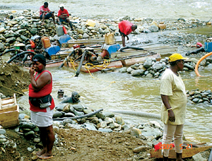

El problema fundamental es la riqueza, el oro como tal, es la region que toda la economia la mueve entorno a la mineria, la mineria se ha intensificado,
se ha convertido en el punto importante generador de la comunidad para la region
hay una explotacion, 100% se distribuye de esta manera: 40% para los trabajadores, 5% para inversion social, 3% Asesoria tenica y asesoria juridica, el 52% es para los socios
lo que se busca con la inversion social es que puedan acceder a otra clase de procesos y proyectos economicos que no sean solamente la mineria, todo recurso natural se acaba,
aparte de la extraccion minera convencional esta la mineria artesanal.
El gobierno le otorgo una gran parte del territorio a la quedada Sucursal Colombiana del Anglo Gold Ashanti que explota el oro, más de un millon de hectarias se le ha entregado a la quedada. Eso atropella el derecho de las comunidades que viven en aquel territorio.
Los conflictos se generan al principio entre compañias, estas compañias necesitan grandes extenciones para hacer las escabaciones, las personas se desplazaban, no solo por aquel problema con las compañias, tambien por el conflicto armado,
tropas que amenazaban.
"Fenómeno" viene del estado y de los paramilitares para tratar de "reducir" la guerilla
align=center>